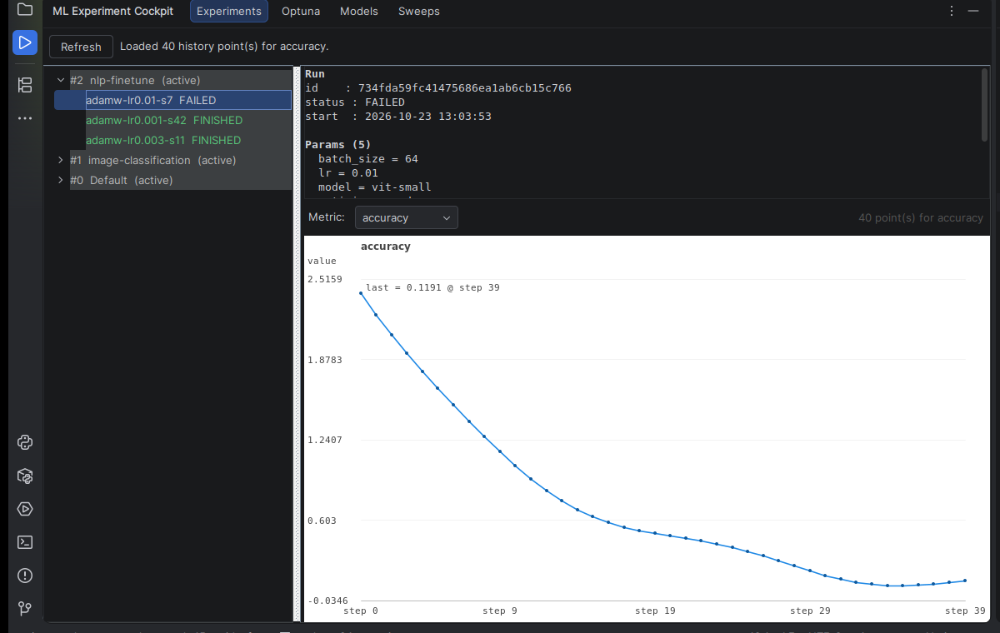

ML Experiment Cockpit
Reads your MLflow runs and metrics, plus W&B sweeps, Optuna studies and the MLflow Model Registry, inside PyCharm or IntelliJ — no browser, no notebook.
Price: Free on the JetBrains Marketplace — with an optional Pro tier at $29/year (the Pro tier is not purchasable yet, see below)

What it does
- The MLflow tree in a tool window: experiments, runs, status and parameters, refreshed with one button.
- Metrics drawn as a curve: pick a metric and read its history, with the last value and the step it was recorded at.
- Three more tabs for the rest of an ML workflow: Optuna (studies and trials), Models (the MLflow Model Registry) and Sweeps (W&B, read-only, with a W&B API key).
- Works in PyCharm, IntelliJ IDEA, WebStorm, GoLand and CLion. Every request goes to the servers you configure — the plugin sends nothing anywhere else.
Pro tier
The Pro tier adds exactly one tab, Compare: right-click a run in the Experiments tree, choose “Compare with…”, and the two runs are shown side by side.
- The parameters of the two runs, side by side.
- The last value of every metric, with the absolute gap and the relative gap between the two runs.
- Both metric curves drawn on the same axis (run A in blue, run B in orange).
- One click copies the two tables as Markdown into the clipboard.
- In Pro, the Compare view reads up to 100 000 metric points per metric per run; the free chart stays at 5 000.
- Pro price
- $29 per year
- Free trial
- 30 days
- Where to buy
- On the plugin’s JetBrains Marketplace listing — the buy button is on the page for plugin 35416
The paid tier is not purchasable yet — the Marketplace is reviewing the update. The listing carries no buy button today, and the four free tabs (Experiments, Optuna, Models, Sweeps) stay complete and free while the review runs. The price, the trial length and the status written here were read on the Marketplace on 13 November 2026.
One correction to be aware of: the trial period set on the listing is 30 days, while the description text on the listing still says “14-day trial”. That sentence is out of date and we are correcting it in the next update.
Who it is for
ML engineers, data scientists and researchers who already run an MLflow tracking server (or an Optuna dashboard, or W&B) and want to read their runs without leaving the IDE.
Limits
- The plugin shows what the server answers, within its query limits: up to 500 experiments, 100 runs per experiment, 500 registered models, 500 model versions and 5 000 metric points per run.
- W&B sweeps are read without pagination (the first 50 sweeps).
- It is read-only: it does not start, stop or modify a run.
Details
- Price
- Free — optional Pro tier at $29/year
- Latest version
- 0.0.21 (approved and listed)
- Next versions
- 2026.1.0 is under review at the Marketplace; 2026.1.2 is ready to upload on 15 November 2026 and is not published yet
- Compatible with
- IDE builds 243 to 263
- License
- Apache-2.0
- Downloads
- 130 (measured on 13 November 2026)
- Source code
- Public on GitHub
The full source code of this plugin is published on GitHub:
https://github.com/tgg49099-dotcom/atlassian-apps/tree/main/jetbrains-plugins/ml-experiment-cockpit